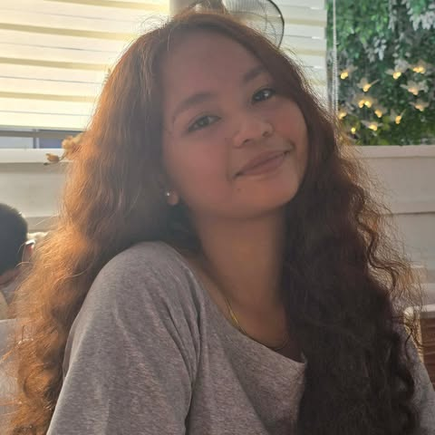

About Myself

Name: LJ N. Lazada
Birthdate: July 10, 2007
Address: Talisay, Nasipit, Agusan del Norte, Philippines
Job: College Student
My Childhood
My childhood was full of happiness, love, and unforgettable memories. I spent most of my time playing with my friends, enjoying family gatherings, and learning new things at school. My parents always encouraged me to do my best and taught me to be respectful, honest, and kind to others. As I grew older, I became more curious about the world around me. I enjoyed exploring new hobbies, participating in school activities, and making new friends. The experiences I had during my childhood helped shape my personality and gave me the confidence to face new challenges.
My Teenage Life
My teenage years were filled with many changes and opportunities for personal growth. During this time, I became more responsible and focused on my studies while building strong friendships. I learned the importance of discipline, teamwork, and making good decisions. I also discovered my interests and talents through school activities and personal experiences. Although I faced challenges along the way, they helped me become stronger and more determined. These years taught me valuable lessons that continue to guide me in my daily life.
My Adulthood
As I entered adulthood, I became more independent and started working toward achieving my goals. I understand that success requires hard work, patience, and continuous learning. Every experience has helped me grow into a more responsible and confident person. Today, I continue to improve myself by gaining new knowledge and developing my skills. I value my family, friends, and the people who support me in reaching my dreams. I believe that with dedication and perseverance, I can build a successful and meaningful future.